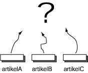
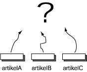
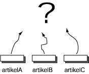

FRAGE 18:
 

Stellen Sie sich vor, dass Sie drei Referenzvariablen haben:
artikelA,
artikelB,
artikelC.
Angenommen, dass artikelA == artikelBartikelB == artikelC
Der Gingham Hund Der Gingham Hund
Hier ist eine Abbildung dieser Situation.
Auch wenn beide Objekte äquivalente Daten enthalten, ist
( strA == strB )
Der == -Operator ergibt false, da es zwei verschiedene
Objekte sind.

Stellen Sie sich vor, dass Sie drei Referenzvariablen haben:
artikelA,
artikelB,
artikelC.
Angenommen, dass artikelA == artikelBartikelB == artikelC